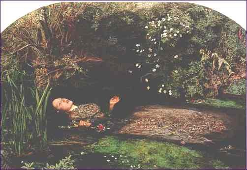

|
Baby, I've been
here before. I know this room, I've walked this floor. I used to live
alone before I knew you. I've seen your flag on the marble arch, but love
is not a victory march, it's a cold and it's a broken hallelujah!
Hallelujah, hallelujah, hallelujah, hallelujah, hallelujah.
There
was a time you let me know what's really going on below, but now you never
show it to me, do you? I remember when I moved in you, and the holy dove
was moving too, and every breath we drew was Hallelujah!
Hallelujah, hallelujah, hallelujah, hallelujah.
Now
maybe there's a God above, but all I ever learned from love is how to
shoot at someone who outdrew you. And it's no complain you hear tonight,
and it's not some pilgrim who's seen the light - it's a cold and it's a
lonely Hallelujah!
Hallelujah, hallelujah, hallelujah, hallelujah.
I did my best; it
wasn't much. I couldn't feel, so I learned to touch. I've told the truth,
I didn't come to fool you. And even though it all went wrong, I'll stand
before the Lord of Song with nothing on my tongue but Hallelujah!
Hallelujah, hallelujah, hallelujah, hallelujah. Hallelujah,
hallelujah, hallelujah, hallelujah. Copyright
1984 Leonard Cohen Stranger Music, Inc. (BMI).
| O |

|
M |
| P |
I |
| H |
L |
| E |
L |
| L |
A |
| I |
I |
| A |
S |
Millais
was in his early twenties when he painted this masterpiece, one of the
most striking and haunting images of British painting. It illustrates the
Queen Gertrude's description in Hamlet (Act 4 Scene 7) of Ophelia's
suicide: "There is a willow grows aslant a brook...there with
fantastic garlands did she come...when down her weedy trophies and herself
fell in the weeping brook. Her clothes spread wide; and mermaid-like,
a-while they bore her up: which time she chanted snatches of old
tunes...".
In true Pre-Raphaelite fashion, the background was
carefully painted from nature, mainly on the banks of the River Ewell near
Kingston-on-Thames, during the summer of 1851. In the winter he painted in
the figure at his London Studio, from the model Elizabeth Siddal, who had
to lie in a bath of water which the artist tried, unsuccessfully, to keep
warm by placing lamps underneath.
Millais not only brilliantly recorded his acute
observation of nature, every detail of the flowers and foliage being
carefully described, but also achieved a pose and a facial expression for
Ophelia herself - neither fully conscious nor yet dead - that contribute
most to the picture's strange and lasting power.
From
"The Tate Gallery, an illustrated companion", Copyright 1979 The
Tate Gallery, London.
Ayn Rand
Bill
Gates Martina Hingis Bertrand Piccard
J.W.
von Goethe

|